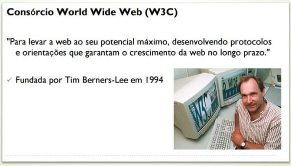

Introdução ao HTML e CSS
Introdução ao HTML
veja mais sobre HTML aqui
HTML (Hyper Text Markup Language) é uma Linguagem de Marcação de Hipertexto utilizada para criação de páginas da Web. Essa é a linguagem que o seu navegador (Browser) decodifica para exibir as páginas. (FERREIRA & EIS, ONLINE, p.7)
Hipertexto pode ser definido como todo o conteúdo o qual se encontra inserido em um documento para a web, sendo que sua principal característica seria a possibilidade de se interligar a outros documentos também na web. (SILVA, 2011, p.20) O HTML é baseado no conceito de Hipertexto. Hipertexto são conjuntos de elementos – ou nós – ligados por conexões. Estes elementos podem ser palavras, imagens, vídeos, áudio, documentos etc.
Introdução ao CSS
veja mais sobre CSS aqui
CSS (Cascading Style Sheets — Folhas de Estilos em Cascata) é uma extensão da HTML, uma linguagem de estilo, ou seja, fazendo o uso dessa linguagem é possível definir como o conteúdo dos elementos HTML serão apresentados na página da Web. Essa extensão foi incorporada à linguagem HTML a partir de sua quarta versão em 1997.
O que é o W3C?
O W3C (World Wide Web Consortium), criado em outubro de 1994 por Tim Berners-Lee, é um consórcio internacional formado por empresas, instituições, pesquisadores, desenvolvedores e público em geral. A finalidade desse consórcio é desenvolver a web a seu potencial máximo, criando normas, especificações e padronizações que se aplicam aos mais diversos segmentos e setores da web. (W3C, ONLINE)
| HTML | CSS | |
|---|---|---|
| Significado: | HiperText Markup Language | Cascading Style Sheets |
| Age como: | o esqueeto do corpo | como a roupa |
| O que faz? | organiza onde será colocada cada estrutura e cada objeto presentes no layout do website | deixa o HTML bonito |
| Qual a versão mais recente? | HTML5 | CSS3 |
você tem curiosidade pra saber o que é javascript?
Clique aqui para acessar mais informações sobre o javascript.